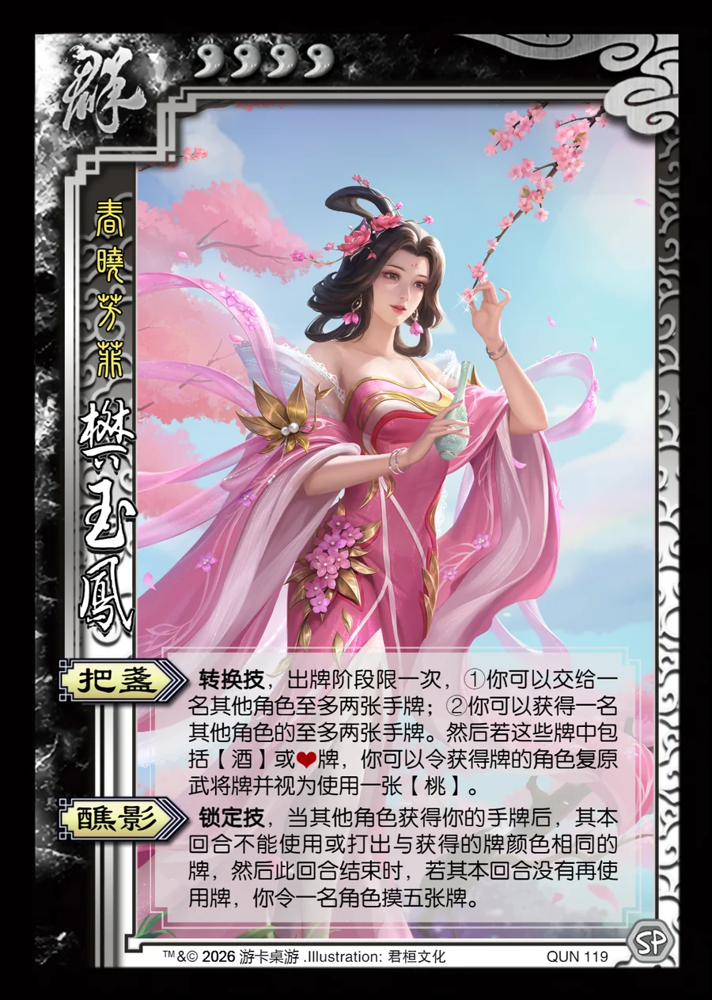

点击卡面查看大图
群
樊玉凤
♥4春晓芳菲
把盏转换技
转换技，出牌阶段限一次，①你可以交给一名其他角色至多两张手牌；②你可以获得一名其他角色的至多两张手牌。然后若这些牌中包括【酒】或♥牌，你可以令获得牌的角色复原武将牌并视为使用一张【桃】。
醮影锁定技
锁定技，当其他角色获得你的手牌后，其本回合不能使用或打出与获得的牌颜色相同的牌，然后此回合结束时，若其本回合没有再使用牌，你令一名角色摸五张牌。

点击卡面查看大图
春晓芳菲
转换技，出牌阶段限一次，①你可以交给一名其他角色至多两张手牌；②你可以获得一名其他角色的至多两张手牌。然后若这些牌中包括【酒】或♥牌，你可以令获得牌的角色复原武将牌并视为使用一张【桃】。
锁定技，当其他角色获得你的手牌后，其本回合不能使用或打出与获得的牌颜色相同的牌，然后此回合结束时，若其本回合没有再使用牌，你令一名角色摸五张牌。